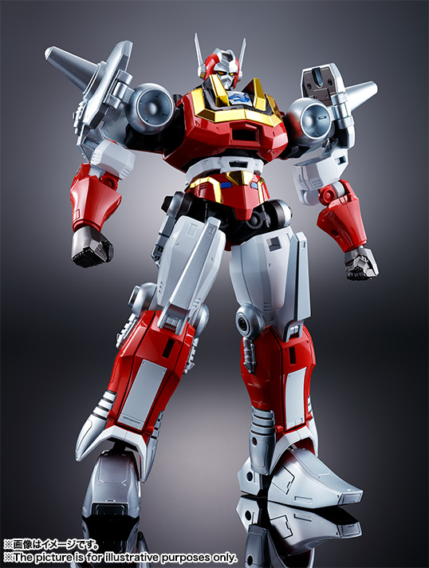
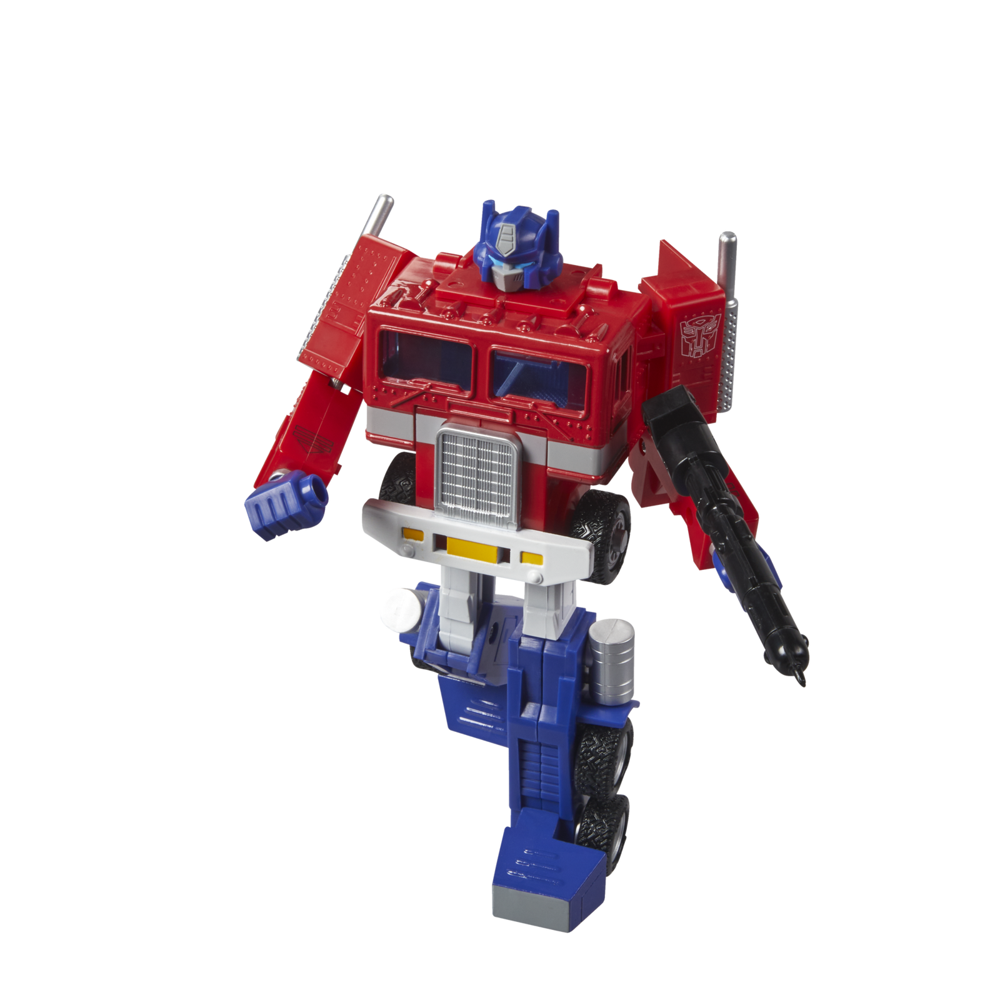
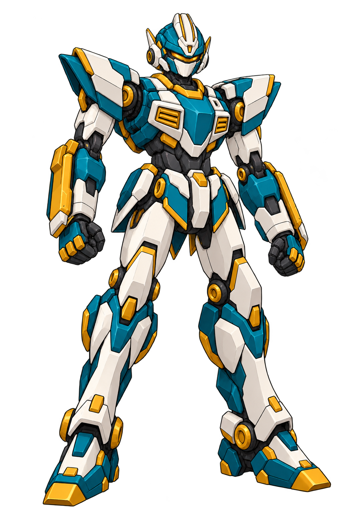
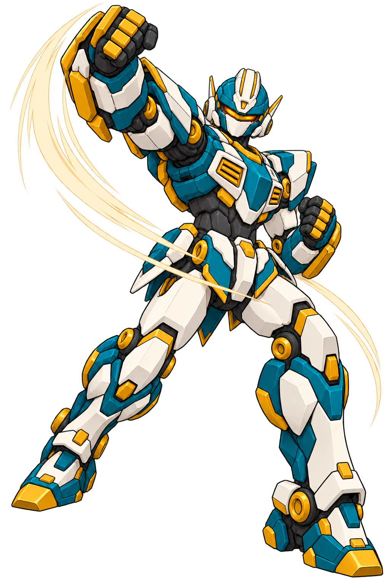

方向 A
前额单刃冠

额前中轴起冠，剪影直接；首稿单刃偏高，若选须压低。
有识别性，但比“不夸张”的目标偏张扬。
2026.10.19 · 当前已确认头部R16
用户表示综合方向看着还行，同时指出头部反复被压扁。此前作者把“小头、克制”落实成了低盔顶和宽耳甲，导致头壳矮宽。
用户最新明确“这个我觉得可以了”，当前R16头部源设计固定：保留正常纵向头壳体积、低额块、侧后双天线、琥珀视窗及白面甲。下一步先合回R13颈下，再检查整机比例和多视图。


比较下颌至真实盔顶的高度，以及耳甲外缘之间的宽度。两张都是原始比例显示，没有拉伸原图；裁切与镜位仍有差别，不能当作同模型正投影。
低中央额块、高位侧后双天线、连续琥珀视窗、白面甲和青白金保持。后续“小头”通过头部相对身体整体缩小实现，保留头壳自身的正常纵向比例。
本次认可及具体来源 · 王者画法统一样例与新旧对照。旧拳王沿当前样例继续；无牌R13全身图的旧头型不得回流。
2026.10.19 · 当前综合样例R15
按用户“考虑一下天威勇士和擎天柱的头型综合”，先以倍功夫/Baikanfu和经典G1擎天柱作具体取样，重新组织无牌头部。
中央长冠脊改为低额块，主天线移到上颞部偏后；无牌的青白金、琥珀视窗与封闭面甲保持。本张是新候选，尚未确认。
| 实际参考 | 本次取的结构 | 转成无牌的表达 |
|---|---|---|
| Bandai官方Baikanfu图 | 作者观察：收紧的眉额与脸框、高位侧后天线的结构关系。 | 低额块、干练眉沿、贴近面甲的颊框。 |
| Hasbro官方经典擎天柱图 | 作者观察：方正盔体、抬高的颞侧壳与闭合面罩轮廓。 | 更平的盔顶、上颞侧块与成对直线主天线。 |
| 当前M01与M05项目源稿 | 无牌脸部/色系，王者的同系列装甲折面。 | 青白金、连续琥珀视窗、白面甲和同系颈下保持。 |


具体取样版本由作者先作理解；用户只提出两个头型的综合方向，并未指定某款商品。
新稿已移除中轴长条冠脊；两根主天线都有可辨根部，盔顶及侧块更方正。天线长度、后倾角和前后根位仍需选定后在同一头部模型中校核；本张不替代正侧背投影。
2026.10.19 · 无牌头冠位置 R14 / 整机家族 R13
按最新意见重新找头顶天线的位置：长条冠脊暂不沿用，四个候选保持同一套连续视窗、封闭面甲和青绿白金色系。
作者优先建议D，B为可压短的备选。这里是四种实际画出的探索，尚未由用户选定；不把提示词中的尺寸目标当作已达成。
方向 A
额前中轴起冠，剪影直接；首稿单刃偏高，若选须压低。
有识别性，但比“不夸张”的目标偏张扬。
方向 B

将长条冠脊改为前额双尖；主角感更直接，成对基座清楚。
作者备选，建议双尖再缩短约25%至30%；未实际缩短。
方向 C

主冠后移至头顶后段，额前分开；位置变化明确。
后鳍仍偏大且有运动头盔/鱼鳍倾向，作者不推荐直接采用。
方向 D · 作者优先建议

短冠集中在额前，三段折面低于头顶最高处，大部分顶壳留空。
作者优先建议：克制与识别性比较平衡；仍需用户选型。
四张镜位和面甲局部有少量漂移，供选方向，不是同模型精确投影。耳侧的小天线仍有上翘幅度，主冠选定后将统一为此前要求的直线后向；当前耳侧细节尚不固定。
王者是旧系列的钦定主角机，保留更臃肿的全装、华丽冠饰和过度武装。无牌是同系列量产基础体，本作的重要角色；以利落的身体、简洁胸甲和拳技姿态显出自己的力量。


| 共同家族 | 无牌 | 完全版王者 |
|---|---|---|
| 胸甲与凹入散热口 | 朴素中央护甲、少量散热块 | 厚甲、冠军饰纹和更多武器挂点 |
| 阶梯肩甲与圆形连接 | 轻装肩壳、关节外露，利于体术 | 重肩、炮轴、层翼和根部推进器 |
| 四肢倒角与关节 | 长腿紧凑靴，双臂打击护轨成为记忆点 | 厚甲、右臂钻、左盾及腿侧武器舱 |
并排用于造型比较，不是工程比例图；无牌16米、王者20米的设定不变。旧企划中的护甲交接关系是胸甲家族相通的现有剧情依据，没有新增剧情。
这张在最新头冠反馈前已发起生成，只用来观察同一基础体的拳线、身体对角和画面分量。头部仍是已要求继续修改的R13，不能据此锁定。拳势也未构成完整动作或命中验证。

R12大圆头、低颈、短腿和厚鞋叠出了矮钝的机器河童观感，圆护具式胸肩也缺少与王者的同系关系。旧三视图保留作历史，不再作为本轮全身派生依据。

先按选中的冠型压好体量和侧天线朝向，再补同一头部的正面与侧面；合回颈下候选并检查动作身份，随后重做整机正侧背。当前不在四种未选头型上批量派生。
四方向来源与逐图意见整机与动作来源用户最新头冠要求两机家族与角色层级本批实际提示词
内置 image_gen 制作。新图尚未获用户选定，未替换游戏运行或发送本批新图交接。馆守Z沿用现有；社勇王与六名人物固定29文件保持。